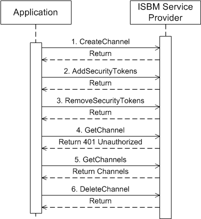
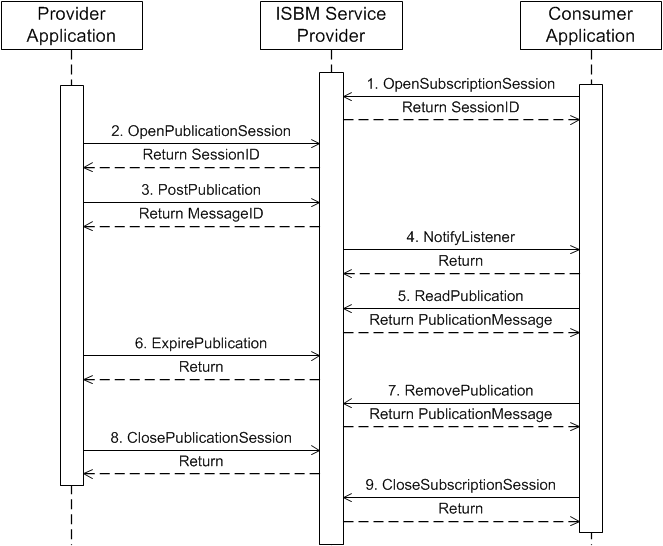

Abstract
This document defines a SOAP Web Service implementation of the ISA 95.00.06 Messaging Service Model. The ws-ISBM defines a minimal interface subset to Enterprise Service Buses (ESB) and other message exchange middleware, using a standard interface consisting of channels and topics. The benefit from this approach is to allow applications to expose a single, standardized interface rather than having to be custom built for every version and format of ESB or message exchange system.
Status
This specification was last revised and approved by OpenO&M on the above date. Check the Latest Version for possible later revisions of this document.
This document is considered stable and may be used as reference material or cited as a normative reference from another document.
The latest stable version of the editor's draft of this specification is always available on the MIMOSA ws-ISBM Git repository.
If you wish to make comments regarding this specification in a manner that is tracked by OpenO&M, please submit them via the public bug database. You can alternatively contact MIMOSA directly and arrangements will be made to transpose appropriate remarks to the public bug database. All feedback is welcome.
Notices
Copyright MIMOSA 2014. All Rights Reserved.
All capitalized terms in the following text have the meanings assigned to them in the MIMOSA Intellectual Property Rights Policy (the "MIMOSA IPR Policy"). The full Policy may be found at the MIMOSA website.
The limited permissions granted above are perpetual and will not be revoked by MIMOSA or its successors or assigns.
This document and the information contained herein is provided on an "AS IS" basis and MIMOSA DISCLAIMS ALL WARRANTIES, EXPRESS OR IMPLIED, INCLUDING BUT NOT LIMITED TO ANY WARRANTY THAT THE USE OF THE INFORMATION HEREIN WILL NOT INFRINGE ANY OWNERSHIP RIGHTS OR ANY IMPLIED WARRANTIES OF MERCHANTABILITY OR FITNESS FOR A PARTICULAR PURPOSE.
MIMOSA requests that any MIMOSA Party or any other party that believes it has patent claims that would necessarily be infringed by implementations of this MIMOSA Final Deliverable, to notify MIMOSA TC Administrator and provide an indication of its willingness to grant patent licenses to such patent claims in a manner consistent with the IPR Mode of the MIMOSA Technical Committee that produced this deliverable.
MIMOSA invites any party to contact the MIMOSA TC Administrator if it is aware of a claim of ownership of any patent claims that would necessarily be infringed by implementations of this MIMOSA Final Deliverable by a patent holder that is not willing to provide a license to such patent claims in a manner consistent with the IPR Mode of the MIMOSA Technical Committee that produced this MIMOSA Final Deliverable. MIMOSA may include such claims on its website, but disclaims any obligation to do so.
MIMOSA takes no position regarding the validity or scope of any intellectual property or other rights that might be claimed to pertain to the implementation or use of the technology described in this MIMOSA Final Deliverable or the extent to which any license under such rights might or might not be available; neither does it represent that it has made any effort to identify any such rights. Information on MIMOSA's procedures with respect to rights in any document or deliverable produced by a MIMOSA Technical Committee can be found on the MIMOSA website. Copies of claims of rights made available for publication and any assurances of licenses to be made available, or the result of an attempt made to obtain a general license or permission for the use of such proprietary rights by implementers or users of this MIMOSA Final Deliverable, can be obtained from the MIMOSA TC Administrator. MIMOSA makes no representation that any information or list of intellectual property rights will at any time be complete, or that any claims in such list are, in fact, Essential Claims.
Material from ANSI/ISA-95 series of standards used with permission of ISA - The Instrumentation, Systems, and Automation Society.
While the information, data, and standards provided in this publication were developed and are presented in good faith in accordance with a reasonable process that was subject to intellectual property and antitrust policies to benefit the industry as a whole, the publication is provided "as is" for information and guidance only, and there is no representation or warranty of any type or kind, including but not limited to warranties of merchantability or fitness for a particular purpose, and no warranty that use of the information, data, or standards will not infringe patent, copyright, trademark, trade secret, or other intellectual property rights of any party.
Table of Contents
- 1Introduction
- 2Service Requirements
- 3Service Definitions
- 4Conformance
- Appendix AExample HTTP Flows
- Acknowledgements
1Introduction
This ws-ISBM specification defines a SOAP Web Service implementation of the ISA 95.00.06 Messaging Service Model.
The ws-ISBM defines a minimal interface subset to Enterprise Service Buses (ESB) and other message exchange middleware using a standard Web Service interface. Publish-subscribe and request-response messaging patterns are supported through a consistent and unified model. Message routing is conducted through shared channels and topics, and optionally, XPath filtering for granular content-based filtering. An asyncronous Web Service callback is also provided to clients for notification of applicable messages. Token-based security for channels is specified to support multiple authorization models, from basic credential exchange to federated identity providers.
The benefit of a ws-ISBM implementation is to allow applications to expose a single, standardized interface rather than having to be custom built for every version and format of ESB or message exchange system. The goal is to further interoperability in application to application communications.
1.2Notational Conventions
The key words "MUST", "MUST NOT", "REQUIRED", "SHALL", "SHALL NOT", "SHOULD", "SHOULD NOT", "RECOMMENDED", "MAY", and "OPTIONAL" in this document are to be interpreted as described in RFC 2119.
This specification uses the following syntax to define XML structures: Element Name (Type) [Cardinality]. The namespaces for Types are defined in the following section. For example, the Topic element defined as an XML Schema string with one to many cardinality would be defined as: Topic (xs:string) [1..*].
1.3Namespaces
The following namespaces are used in this document:
| Prefix | Namespace |
|---|---|
| xs | http://www.w3.org/2001/XMLSchema |
| isbm | http://www.openoandm.org/ws-isbm/ |
2Service Requirements
The following items define shared requirements that are applicable across the various services defined in Service Definitions. These requirements supplement the service requirements specified by ISA 95.00.06 but are contextualized for SOAP Web Services.
2.1Message Content Format
Content is associated with a message through the use of an XML Schema any element. The XML content MUST be valid XML. A ws-ISBM Service Provider SHOULD preserve significant whitespace and comments within the XML content.
Note As only an XML element is associated with a message, an XML declaration specifically for the content is not supported. Instead, the message content will inherit the XML declaration of the SOAP body.
2.2Security
Security in the ws-ISBM specification only provide authorization of channels. Authorization of services is considered out-of-scope.
All ws-ISBM implementations MUST support transport layer security (e.g. SSL/TLS) in order to secure tokens and messages, and to prevent replay attacks.
All ws-ISBM implementations MUST support the WS-Security UsernameToken using PasswordText as a basic level of security token. Examples of its use can be found in Example HTTP Flows.
A ws-ISBM Service Provider MAY choose to support additional forms of security tokens (e.g. SAML assertions, OAuth tokens) and it is RECOMMENDED that a ws-ISBM Service Provider support out-of-band token exchange standards such as SAML, WS-Federation or OAuth.
As security tokens in the Channel Management Service are specified using XML Schema any element, tokens MUST be able to be represented in an XML format. For tokens that do not have a canonical XML representation, a ws-ISBM Service Provider MUST define the supported formats.
A ws-ISBM Service Provider MUST validate security tokens for every service operation except for the Channel Management Service CreateChannel operation (since the channel does not exist at the point in time when invoking CreateChannel). For the provider and consumer services, tokens are validated upon every operation to ensure that an application has valid credentials even after a session is opened (in the event of token revocation).
2.3Error Handling
2.3.1SOAP Faults
SOAP Faults MUST have an accompanying human readable explanation. For a SOAP 1.1 implementation this is provided through the SOAP faultstring element (see SOAP 1.1, SOAP Fault). For a SOAP 1.2 implementation this is provided through the SOAP Reason element (see SOAP 1.2, SOAP Reason Element).
2.3.2Parameter Faults
If any parameter for an operation is malformed or not optional and blank, then a ws-ISBM Service Provider MUST return a SOAP Fault and SHOULD include undeclared isbm:ParameterFault element in the fault details to aid senders in determining the type of error. The fault MUST carry the offending parameter name/s.
2.3.3Invalid Notification URL
If a provider/consumer application provides an invalid URL or a URL that does not host a NotifyListener service, the ws-ISBM Service Provider MAY choose not to send or defer a NotifyListener SOAP request.
2.4Content-Based Filtering
To allow efficient content-based filtering of messages, an XPath expression MAY be added to a subscription or read request session to provide a filtering definition. The XPath expression MUST be defined as an XPath v1.0 expression. An XPath evaluation that returns an empty value or node set MUST NOT cause a notification to be generated nor will the message be visible to the receiving system. For an XPath expression that use namespaces, multiple namespace prefixes and names are added upon session creation.
Note An empty result from an XPath evaluation will result in the whole message being is filtered; the message content itself is not filtered.
2.5Message Expiry
During posting of certain messages, a sender MAY specify an expiry duration for the message. A ws-ISBM Service Provider MUST hide an expired message from potential receivers unless the receiver has already read the message, in which case it will always remain visible to that particular receiver. This is to ensure the message is still available to the receiver to ensure message removal removes the correct message.
If a sender specifies a negative Expiry duration, then a ws-ISBM Service Provider MUST consider it equivalent to a blank duration.
Note Responses can still be posted for an expired request message, and Consumers will still receive response notifications and be able to read and remove these responses.
3Service Definitions
All services defined in ISA 95.00.06 are defined as SOAP Web Services in this specification. The SOAP service definitions below are to be interpreted in the context of the corresponding ISA 95.00.06 service.
Note ISA 95.00.06 does not define a Expire Request operation within the Consumer Request Service, but it has been specified below for a consistent message expiry model across services.
All service operations have corresponding HTTP examples shown in Example HTTP Flows.
3.1Terminology
- ChannelDescription
- The description of a channel.
- ChannelType
- Indicates whether the channel is for publications or requests/responses. Defined ChannelTypes are
PublicationandRequest. - ChannelURI
- The primary identifier for a channel.
- Expiry
- The duration until the expiration of the message.
- ListenerURL
- The URL endpoint, reachable by the ws-ISBM Service Provider, which hosts a ws-ISBM Notification Service. Used to indicate when a new message is available for a session.
- MessageContent
- The XML content of a message.
- MessageID
- An identifier generated by the ws-ISBM Service Provider upon creation of a message.
- NamespaceName
- The namespace name used for an XPath filter expression.
- NamespacePrefix
- The namespace prefix used for an XPath filter expression.
- SecurityToken
- A token that can be assigned to a channel to control authorization.
- SessionID
- An identifier generated by the ws-ISBM Service Provider upon creation of a channel. Identifiers SHOULD be made non-obvious and not easily guessable.
- Topic
- The topic name.
- XPathExpression
- The XPath 1.0 expression that is used to filter message content.
3.2Channel Management Service
The Channel Management Service is available as a WSDL description.
3.2.1Create Channel
| Name | CreateChannel |
|---|---|
| Description | Creates a new channel. |
| Input |
ChannelURI (xs:string) [1] ChannelType (isbm:ChannelType) [1] ChannelDescription (xs:string) [0..1] SecurityToken (xs:any) [0..*] |
| Behavior |
If the ChannelURI already exists then a ChannelFault is returned. The SecurityTokens are assigned to the channel upon its creation. If duplicate SecurityTokens exist, these result in a single token being assigned to the channel to maintain a distinct list. |
| Output | N/A |
| Faults | ChannelFault |
3.2.2Add Security Tokens
| Name | AddSecurityTokens |
|---|---|
| Description | Adds security tokens to a channel. |
| Input |
ChannelURI (xs:string) [1] SecurityToken (xs:any) [1..*] |
| Behavior |
If the ChannelURI does not exist, then a ChannelFault is returned. If the specified channel is assigned security tokens and the provided token does not match a token assigned to the channel, then a ChannelFault is returned. If a specified SecurityToken is already assigned to the channel, then no further action is taken to maintain a distinct list. |
| Output | N/A |
| Faults | ChannelFault |
3.2.3Remove Security Tokens
| Name | RemoveSecurityTokens |
|---|---|
| Description | Removes security tokens from a channel. |
| Input |
ChannelURI (xs:string) [1] SecurityToken (xs:any) [1..*] |
| Behavior |
If the ChannelURI does not exist, then a ChannelFault is returned. If the specified channel is assigned security tokens and the provided token does not match a token assigned to the channel, then a ChannelFault is returned. If any specified SecurityToken is not assigned to the channel, then an SecurityTokenFault is returned. No tokens are removed from the channel, even if they are valid. |
| Output | N/A |
| Faults |
ChannelFault SecurityTokenFault |
3.2.4Delete Channel
| Name | DeleteChannel |
|---|---|
| Description | Deletes a channel. |
| Input | ChannelURI (xs:string) [1] |
| Behavior |
If the ChannelURI does not exist, then a ChannelFault is returned. If the specified channel is assigned security tokens and the provided token does not match a token assigned to the channel, then a ChannelFault is returned. The channel along with associated sessions and messages are deleted. No notification is provided to any applications with active sessions. |
| Output | N/A |
| Faults | ChannelFault |
3.2.5Get Channel
| Name | GetChannel |
|---|---|
| Description | Gets information about a channel. |
| Input | ChannelURI (xs:string) [1] |
| Behavior |
If the ChannelURI does not exist, then a ChannelFault is returned. If the specified channel is assigned security tokens and the provided token does not match a token assigned to the channel, then a ChannelFault is returned. |
| Output |
Channel (isbm:Channel) [1], composed of: ChannelURI (xs:string) [1] ChannelType (isbm:ChannelType) [1] ChannelDescription (xs:string) [0..1] |
| Faults | ChannelFault |
3.2.6Get Channels
| Name | GetChannels |
|---|---|
| Description | Gets information about all channels. |
| Input | N/A |
| Behavior | The channels returned are filtered by those that match the security token. Any channel that does not have security tokens assigned are returned regardless. |
| Output |
Channel (isbm:Channel) [0..*], composed of: ChannelURI (xs:string) [1] ChannelType (isbm:ChannelType) [1] ChannelDescription (xs:string) [0..1] |
| Faults | N/A |
3.3Notification Service
The Notification Service is available as a WSDL description.
3.3.1Notify Listener
| Name | NotifyListener |
|---|---|
| Description | Provides a notification of a new message being able to be read for a session. The Listener URL invoked was provided when the application desiring notifications subscribed to the channel. |
| Input |
SessionID (xs:string) [1] MessageID (xs:string) [1] Topic (xs:string) [0..*] RequestMessageID (xs:string) [0..1] |
| Behavior |
Topic MUST NOT be used for consumer request session response notification. RequestMessageID allows correlation with the original request and thus it MUST only be used for consumer request session response notification. |
| Output | N/A |
| Faults | N/A |
3.4Provider Publication Service
The Provider Publication Service is available as a WSDL description.
3.4.1Open Publication Session
| Name | OpenPublicationSession |
|---|---|
| Description | Opens a publication session for a channel. |
| Input | ChannelURI (xs:string) [1] |
| Behavior |
If the ChannelURI does not exist, then a ChannelFault is returned. If the specified channel is assigned security tokens and the provided token does not match a token assigned to the channel, then a ChannelFault is returned. If the channel type is not a Publication type, then an OperationFault is returned. |
| Output | SessionID (xs:string) [1] |
| Faults |
ChannelFault OperationFault |
3.4.2Post Publication
| Name | PostPublication |
|---|---|
| Description | Posts a publication message on a channel. |
| Input |
SessionID (xs:string) [1] MessageContent (xs:any) [1] Topic (xs:string) [1..*] Expiry (xs:duration) [0..1] |
| Behavior |
If the SessionID does not exist or does not correspond to a publication session, then a SessionFault is returned. If the channel associated with the session is assigned security tokens and the provided token does not match a token assigned to the channel, then a SessionFault is returned. |
| Output | MessageID (xs:string) [1] |
| Faults | SessionFault |
3.4.3Expire Publication
| Name | ExpirePublication |
|---|---|
| Description | Expires a posted publication. |
| Input |
SessionID (xs:string) [1] MessageID (xs:string) [1] |
| Behavior |
If the SessionID does not exist or does not correspond to a publication session, then a SessionFault is returned. If the channel associated with the session is assigned security tokens and the provided token does not match a token assigned to the channel, then a SessionFault is returned. If the MessageID does not correspond with the SessionID or the corresponding message has already expired, then no further action is taken. The message is expired for all topics associated with the message. |
| Output | N/A |
| Faults | SessionFault |
3.4.4Close Publication Session
| Name | ClosePublicationSession |
|---|---|
| Description | Closes a publication session. |
| Input | SessionID (xs:string) [1] |
| Behavior |
If the SessionID does not exist (non-existent or already closed) or does not correspond to a publication session, then a SessionFault is returned. If the channel associated with the session is assigned security tokens and the provided token does not match a token assigned to the channel, then a SessionFault is returned. All unexpired messages that have been posted during the session will be expired. |
| Output | N/A |
| Faults | SessionFault |
3.5Consumer Publication Service
The Consumer Publication Service is available as a WSDL description.
3.5.1Open Subscription Session
| Name | OpenSubscriptionSession |
|---|---|
| Description | Opens a subscription session for a channel. |
| Input |
ChannelURI (xs:string) [1] Topic (xs:string) [1..*] ListenerURL (xs:string) [0..1] XPathExpression (xs:string) [0..1] XPathNamespace (isbm:Namespace) [0..*], composed of: NamespacePrefix (xs:string) [1] NamespaceName (xs:string) [1] |
| Behavior |
If the ChannelURI does not exist, then a ChannelFault is returned. If the specified channel is assigned security tokens and the provided token does not match a token assigned to the channel, then a ChannelFault is returned. If the channel type is not a Publication type, then an OperationFault is returned. If multiple NamespacePrefixes exist with different NamespaceNames, then a NamespaceFault is returned. |
| Output | SessionID (xs:string) [1] |
| Faults |
ChannelFault NamespaceFault OperationFault |
3.5.2Read Publication
| Name | ReadPublication |
|---|---|
| Description | Returns the first non-expired publication message or a previously read expired message that satisfies the session message filters. |
| Input | SessionID (xs:string) [1] |
| Behavior |
If the SessionID does not exist or does not correspond to a subscription session, then a SessionFault is returned. If the channel associated with the session is assigned security tokens and the provided token does not match a token assigned to the channel, then a SessionFault is returned. |
| Output |
PublicationMessage (isbm:PublicationMessage) [0..1], composed of: MessageID (xs:string) [1] MessageContent (xs:any) [1] Topic (xs:string) [1..*] |
| Faults | SessionFault |
3.5.3Remove Publication
| Name | RemovePublication |
|---|---|
| Description | Removes the first, if any, publication message in the subscription queue. |
| Input | SessionID (xs:string) [1] |
| Behavior |
If the SessionID does not exist or does not correspond to a subscription session, then a SessionFault is returned. If the channel associated with the session is assigned security tokens and the provided token does not match a token assigned to the channel, then a SessionFault is returned. |
| Output | N/A |
| Faults | SessionFault |
3.5.4Close Subscription Session
| Name | CloseSubscriptionSession |
|---|---|
| Description | Closes a subscription session. |
| Input | SessionID (xs:string) [1] |
| Behavior |
If the SessionID does not exist (non-existent or already closed) or does not correspond to a publication session, then a SessionFault is returned. If the channel associated with the session is assigned security tokens and the provided token does not match a token assigned to the channel, then a SessionFault is returned. |
| Output | N/A |
| Faults | SessionFault |
3.6Provider Request Service
The Provider Request Service is available as a WSDL description.
3.6.1Open Provider Request Session
| Name | OpenProviderRequestSession |
|---|---|
| Description | Opens a provider request session for a channel for reading requests and posting responses. |
| Input |
ChannelURI (xs:string) [1] Topic (xs:string) [1..*] ListenerURL (xs:string) [0..1] XPathExpression (xs:string) [0..1] XPathNamespace (isbm:Namespace) [0..*], composed of: NamespacePrefix (xs:string) [1] NamespaceName (xs:string) [1] |
| Behavior |
If the ChannelURI does not exist, then a ChannelFault is returned. If the specified channel is assigned security tokens and the provided token does not match a token assigned to the channel, then a ChannelFault is returned. If the channel type is not a Request type, then an OperationFault is returned. If multiple NamespacePrefixes exist with different NamespaceNames, then a NamespaceFault is returned. |
| Output | SessionID (xs:string) [1] |
| Faults |
ChannelFault NamespaceFault OperationFault |
3.6.2Read Request
| Name | ReadRequest |
|---|---|
| Description | Returns the first non-expired request message or a previously read expired message that satifies the session message filters. |
| Input | SessionID (xs:string) [1] |
| Behavior |
If the SessionID does not exist or does not correspond to a provider request session, then a SessionFault is returned. If the channel associated with the session is assigned security tokens and the provided token does not match a token assigned to the channel, then a SessionFault is returned. The returned Topic will correspond to the first topic that matched the posted request. |
| Output |
RequestMessage (isbm:RequestMessage) [0..1], composed of: MessageID (xs:string) [1] MessageContent (xs:any) [1] Topic (xs:string) [1] |
| Faults | SessionFault |
3.6.3Remove Request
| Name | RemoveRequest |
|---|---|
| Description | Deletes the first request message, if any, in the session message queue. |
| Input | SessionID (xs:string) [1] |
| Behavior |
If the SessionID does not exist or does not correspond to a provider request session, then a SessionFault is returned. If the channel associated with the session is assigned security tokens and the provided token does not match a token assigned to the channel, then a SessionFault is returned. |
| Output | N/A |
| Faults | SessionFault |
3.6.4Post Response
| Name | PostResponse |
|---|---|
| Description | Posts a response message on a channel. |
| Input |
SessionID (xs:string) [1] RequestMessageID (xs:string) [1] MessageContent (xs:any) [1] |
| Behavior |
If the SessionID does not exist or does not correspond to a provider request session, then a SessionFault is returned. If the channel associated with the session is assigned security tokens and the provided token does not match a token assigned to the channel, then a SessionFault is returned. If there is no request message that can be matched to RequestMessageID, then no further action is taken. |
| Output | MessageID (xs:string) [1] |
| Faults | SessionFault |
3.6.5Close Provider Request Session
| Name | CloseProviderRequestSession |
|---|---|
| Description | Closes a provider request session. |
| Input | SessionID (xs:string) [1] |
| Behavior |
If the SessionID does not exist (non-existent or already closed) or does not correspond to a Request session, then a SessionFault is returned. If the channel associated with the session is assigned security tokens and the provided token does not match a token assigned to the channel, then a SessionFault is returned. |
| Output | N/A |
| Faults | SessionFault |
3.7Consumer Request Service
The Consumer Request Service is available as a WSDL description.
3.7.1Open Consumer Request Session
| Name | OpenConsumerRequestSession |
|---|---|
| Description | Opens a consumer request session for a channel for posting requests and reading responses. |
| Input |
ChannelURI (xs:string) [1] ListenerURL (xs:string) [0..1] |
| Behavior |
If the ChannelURI does not exist, then a ChannelFault is returned. If the specified channel is assigned security tokens and the provided token does not match a token assigned to the channel, then a ChannelFault is returned. If the channel type is not a Request type, then an OperationFault is returned. |
| Output | SessionID (xs:string) [1] |
| Faults |
ChannelFault OperationFault |
3.7.2Post Request
| Name | PostRequest |
|---|---|
| Description | Posts a request message on a channel. |
| Input |
SessionID (xs:string) [1] MessageContent (xs:any) [1] Topic (xs:string) [1] Expiry (xs:duration) [0..1] |
| Behavior |
If the SessionID does not exist or does not correspond to a consumer request session, then a SessionFault is returned. If the channel associated with the session is assigned security tokens and the provided token does not match a token assigned to the channel, then a SessionFault is returned. |
| Output | MessageID (xs:string) [1] |
| Faults | SessionFault |
3.7.3Expire Request
| Name | ExpireRequest |
|---|---|
| Description | Expires a posted request message. |
| Input |
SessionID (xs:string) [1] MessageID (xs:string) [1] |
| Behavior |
If the SessionID does not exist or does not correspond to a consumer request session, then a SessionFault is returned. If the channel associated with the session is assigned security tokens and the provided token does not match a token assigned to the channel, then a SessionFault is returned. If the MessageID does not correspond with the SessionID or the corresponding message has already expired, then no further action is taken. |
| Output | N/A |
| Faults | SessionFault |
3.7.4Read Response
| Name | ReadResponse |
|---|---|
| Description | Returns the first response message, if any, in the session message queue associated with the request. |
| Input |
SessionID (xs:string) [1] RequestMessageID (xs:string) [1] |
| Behavior |
If the SessionID does not exist or does not correspond to a consumer request session, then a SessionFault is returned. If the channel associated with the session is assigned security tokens and the provided token does not match a token assigned to the channel, then a SessionFault is returned. If the RequestMessageID does not correspond to a message in the message queue, then no message is returned. |
| Output |
ResponseMessage (isbm:ResponseMessage) [0..1], composed of: MessageID (xs:string) [1] MessageContent (xs:any) [1] |
| Faults | SessionFault |
3.7.5Remove Response
| Name | RemoveResponse |
|---|---|
| Description | Deletes the first response message, if any, in the session message queue associated with the request. |
| Input |
SessionID (xs:string) [1] RequestMessageID (xs:string) [1] |
| Behavior |
If the SessionID does not exist or does not correspond to a consumer request session, then a SessionFault is returned. If the channel associated with the session is assigned security tokens and the provided token does not match a token assigned to the channel, then a SessionFault is returned. If the RequestMessageID does not correspond to a message in the message queue, then no further action is taken. |
| Output | N/A |
| Faults | SessionFault |
3.7.6Close Consumer Request Session
| Name | CloseConsumerRequestSession |
|---|---|
| Description | Closes a consumer request session. |
| Input | SessionID (xs:string) [1] |
| Behavior |
If the SessionID does not exist (non-existent or already closed) or does not correspond to a Request session, then a SessionFault is returned. If the channel associated with the session is assigned security tokens and the provided token does not match a token assigned to the channel, then a SessionFault is returned. All unexpired requests that have been posted during the session will be expired. |
| Output | N/A |
| Faults | SessionFault |
4Conformance
Any assessment of conformance of a ws-ISBM implementation MUST be qualified by the following:
- Support for the Channel Management Service
- Support for the Notification Service
- Support for the Provider Publication Service
- Support for the Consumer Publication Service
- Support for the Provider Request Service
- Support for the Consumer Request Service
- Support for SOAP 1.1 and SOAP 1.2 services
- Support for Filter Expressions in an XPath 1.0 format
- Support for Security Tokens using WS-Security UsernameToken
- Support for other Security Tokens formats
- A statement of the total conformance concerning services and security methods supported or, in case of partial conformance, a statement identifying explicitly the areas of non-conformance
Appendix AExample HTTP Flows
A.1Channel Management Example
1. CreateChannel
The Application creates a channel on the ISBM Service Provider and assigns a HTTP Basic Authentication security token.
Note XML special characters must be escaped, as seen with the < character in the Password element.
HTTP Request
POST /ChannelManagementService HTTP/1.1 Host: ws-isbm.example.com Content-Type: text/xml; charset=utf-8 Content-Length: 598 SOAPAction: "http://www.openoandm.org/ws-isbm/CreateChannel" <?xml version="1.0" encoding="UTF-8"?> <soap:Envelope xmlns:soap="http://schemas.xmlsoap.org/soap/envelope/"> <soap:Body> <isbm:CreateChannel xmlns:isbm="http://www.openoandm.org/ws-isbm/"> <isbm:ChannelURI>/Enterprise/Site/Area/WorkCenter</isbm:ChannelURI> <isbm:ChannelType>Publication</isbm:ChannelType> <isbm:SecurityToken> <isbm:BasicAuth> <isbm:UserID>Application1</isbm:UserID> <isbm:Password><s9.vQfLDx9LgL</isbm:Password> </isbm:BasicAuth> </isbm:SecurityToken> </isbm:CreateChannel> </soap:Body> </soap:Envelope>
HTTP Response
HTTP/1.1 200 OK Content-Type: text/xml; charset=utf-8 Content-Length: 238 <?xml version="1.0" encoding="UTF-8"?> <soap:Envelope xmlns:soap="http://schemas.xmlsoap.org/soap/envelope/"> <soap:Body> <isbm:CreateChannelResponse xmlns:isbm="http://www.openoandm.org/ws-isbm/" /> </soap:Body> </soap:Envelope>
2. AddSecurityToken
The Application assigns an additional security token to the channel.
HTTP Request
POST /ChannelManagementService HTTP/1.1 Host: ws-isbm.example.com Content-Type: text/xml; charset=utf-8 Content-Length: 892 SOAPAction: "http://www.openoandm.org/ws-isbm/AddSecurityToken" <?xml version="1.0" encoding="UTF-8"?> <soap:Envelope xmlns:soap="http://schemas.xmlsoap.org/soap/envelope/"> <soap:Header> <wsse:Security xmlns:wsse="http://docs.oasis-open.org/wss/2004/01/oasis-200401-wss-wssecurity-secext-1.0.xsd"> <wsse:UsernameToken> <wsse:Username>Application1</wsse:Username> <wsse:Password><s9.vQfLDx9LgL</wsse:Password> </wsse:UsernameToken> </wsse:Security> </soap:Header> <soap:Body> <isbm:AddSecurityToken xmlns:isbm="http://www.openoandm.org/ws-isbm/"> <isbm:ChannelURI>/Enterprise/Site/Area/WorkCenter</isbm:ChannelURI> <isbm:SecurityToken> <wsse:UsernameToken> <wsse:Username>Application2</wsse:Username> <wsse:Password>chHM?rFum{48mg</wsse:Password> </wsse:UsernameToken> </isbm:SecurityToken> </isbm:AddSecurityToken> </soap:Body> </soap:Envelope>
HTTP Response
HTTP/1.1 200 OK Content-Type: text/xml; charset=utf-8 Content-Length: 241 <?xml version="1.0" encoding="UTF-8"?> <soap:Envelope xmlns:soap="http://schemas.xmlsoap.org/soap/envelope/"> <soap:Body> <isbm:AddSecurityTokenResponse xmlns:isbm="http://www.openoandm.org/ws-isbm/" /> </soap:Body> </soap:Envelope>
3. RemoveSecurityToken
The Application removes the original security token from the channel.
HTTP Request
POST /ChannelManagementService HTTP/1.1 Host: ws-isbm.example.com Content-Type: text/xml; charset=utf-8 Content-Length: 898 SOAPAction: "http://www.openoandm.org/ws-isbm/RemoveSecurityToken" <?xml version="1.0" encoding="UTF-8"?> <soap:Envelope xmlns:soap="http://schemas.xmlsoap.org/soap/envelope/"> <soap:Header> <wsse:Security xmlns:wsse="http://docs.oasis-open.org/wss/2004/01/oasis-200401-wss-wssecurity-secext-1.0.xsd"> <wsse:UsernameToken> <wsse:Username>Application2</wsse:Username> <wsse:Password>chHM?rFum{48mg</wsse:Password> </wsse:UsernameToken> </wsse:Security> </soap:Header> <soap:Body> <isbm:RemoveSecurityToken xmlns:isbm="http://www.openoandm.org/ws-isbm/"> <isbm:ChannelURI>/Enterprise/Site/Area/WorkCenter</isbm:ChannelURI> <isbm:SecurityToken> <wsse:UsernameToken> <wsse:Username>Application1</wsse:Username> <wsse:Password><s9.vQfLDx9LgL</wsse:Password> </wsse:UsernameToken> </isbm:SecurityToken> </isbm:RemoveSecurityToken> </soap:Body> </soap:Envelope>
HTTP Response
HTTP/1.1 200 OK Content-Type: text/xml; charset=utf-8 Content-Length: 244 <?xml version="1.0" encoding="UTF-8"?> <soap:Envelope xmlns:soap="http://schemas.xmlsoap.org/soap/envelope/"> <soap:Body> <isbm:RemoveSecurityTokenResponse xmlns:isbm="http://www.openoandm.org/ws-isbm/" /> </soap:Body> </soap:Envelope>
4. GetChannel
The Application attempts to retrieve channel information using the original security token and receives an authorization failure.
HTTP Request
POST /ChannelManagementService HTTP/1.1 Host: ws-isbm.example.com Content-Type: text/xml; charset=utf-8 Content-Length: 656 SOAPAction: "http://www.openoandm.org/ws-isbm/GetChannel" <?xml version="1.0" encoding="UTF-8"?> <soap:Envelope xmlns:soap="http://schemas.xmlsoap.org/soap/envelope/"> <soap:Header> <wsse:Security xmlns:wsse="http://docs.oasis-open.org/wss/2004/01/oasis-200401-wss-wssecurity-secext-1.0.xsd"> <wsse:UsernameToken> <wsse:Username>Application1</wsse:Username> <wsse:Password><s9.vQfLDx9LgL</wsse:Password> </wsse:UsernameToken> </wsse:Security> </soap:Header> <soap:Body> <isbm:GetChannel xmlns:isbm="http://www.openoandm.org/ws-isbm/"> <isbm:ChannelURI>/Enterprise/Site/Area/WorkCenter</isbm:ChannelURI> </isbm:GetChannel> </soap:Body> </soap:Envelope>
HTTP Response
HTTP/1.1 500 Internal Server Error Content-Type: text/xml; charset=utf-8 Content-Length: 401 <?xml version="1.0" encoding="UTF-8"?> <soap:Envelope xmlns:soap="http://schemas.xmlsoap.org/soap/envelope/"> <soap:Body> <soap:Fault> <faultcode>soap:Client</faultcode> <faultstring>Channel is not accessible.</faultstring> <detail> <isbm:ChannelFault xmlns:isbm="http://www.openoandm.org/xml/ISBM/" /> </detail> </soap:Fault> </soap:Body> </soap:Envelope>
5. GetChannels
The Application retrieves information about channels filtered by the newly assigned security token.
HTTP Request
POST /ChannelManagementService HTTP/1.1 Host: ws-isbm.example.com Content-Type: text/xml; charset=utf-8 Content-Length: 559 SOAPAction: "http://www.openoandm.org/ws-isbm/GetChannels" <?xml version="1.0" encoding="UTF-8"?> <soap:Envelope xmlns:soap="http://schemas.xmlsoap.org/soap/envelope/"> <soap:Header> <wsse:Security xmlns:wsse="http://docs.oasis-open.org/wss/2004/01/oasis-200401-wss-wssecurity-secext-1.0.xsd"> <wsse:UsernameToken> <wsse:Username>Application2</wsse:Username> <wsse:Password>chHM?rFum{48mg</wsse:Password> </wsse:UsernameToken> </wsse:Security> </soap:Header> <soap:Body> <isbm:GetChannels xmlns:isbm="http://www.openoandm.org/ws-isbm/" /> </soap:Body> </soap:Envelope>
HTTP Response
HTTP/1.1 200 OK Content-Type: text/xml; charset=utf-8 Content-Length: 442 <?xml version="1.0" encoding="UTF-8"?> <soap:Envelope xmlns:soap="http://schemas.xmlsoap.org/soap/envelope/"> <soap:Body> <isbm:GetChannelsResponse xmlns:isbm="http://www.openoandm.org/ws-isbm/"> <isbm:Channel> <isbm:ChannelURI>/Enterprise/Site/Area/WorkCenter</isbm:ChannelURI> <isbm:ChannelType>Publication</isbm:ChannelType> </isbm:Channel> </isbm:GetChannelsResponse> </soap:Body> </soap:Envelope>
6. DeleteChannel
The Application removes the channel from the ws-ISBM Service Provider.
HTTP Request
POST /ChannelManagementService HTTP/1.1 Host: ws-isbm.example.com Content-Type: text/xml; charset=utf-8 Content-Length: 659 SOAPAction: "http://www.openoandm.org/ws-isbm/DeleteChannel" <?xml version="1.0" encoding="UTF-8"?> <soap:Envelope xmlns:soap="http://schemas.xmlsoap.org/soap/envelope/"> <soap:Header> <wsse:Security xmlns:wsse="http://docs.oasis-open.org/wss/2004/01/oasis-200401-wss-wssecurity-secext-1.0.xsd"> <wsse:UsernameToken> <wsse:Username>Application2</wsse:Username> <wsse:Password>chHM?rFum{48mg</wsse:Password> </wsse:UsernameToken> </wsse:Security> </soap:Header> <soap:Body> <isbm:DeleteChannel xmlns:isbm="http://www.openoandm.org/ws-isbm/"> <isbm:ChannelURI>/Enterprise/Site/Area/WorkCenter</isbm:ChannelURI> </isbm:DeleteChannel> </soap:Body> </soap:Envelope>
HTTP Response
HTTP/1.1 200 OK Content-Type: text/xml; charset=utf-8 Content-Length: 238 <?xml version="1.0" encoding="UTF-8"?> <soap:Envelope xmlns:soap="http://schemas.xmlsoap.org/soap/envelope/"> <soap:Body> <isbm:DeleteChannelResponse xmlns:isbm="http://www.openoandm.org/ws-isbm/" /> </soap:Body> </soap:Envelope>
A.2Publish-Subscribe Example
1. OpenSubscriptionSession
The Consumer Application opens a subscription session with the ISBM Service Provider and receives a session identifier.
HTTP Request
POST /ConsumerPublicationService HTTP/1.1 Host: ws-isbm.example.com Content-Type: text/xml; charset=utf-8 Content-Length: 812 SOAPAction: "http://www.openoandm.org/ws-isbm/OpenSubscriptionSession" <?xml version="1.0" encoding="UTF-8"?> <soap:Envelope xmlns:soap="http://schemas.xmlsoap.org/soap/envelope/"> <soap:Header> <wsse:Security xmlns:wsse="http://docs.oasis-open.org/wss/2004/01/oasis-200401-wss-wssecurity-secext-1.0.xsd"> <wsse:UsernameToken> <wsse:Username>ConsumerApplication</wsse:Username> <wsse:Password>Dj8(bCU)4bnhjc</wsse:Password> </wsse:UsernameToken> </wsse:Security> </soap:Header> <soap:Body> <isbm:OpenSubscriptionSession xmlns:isbm="http://www.openoandm.org/ws-isbm/"> <isbm:ChannelURI>/Enterprise/Site/Area/WorkCenter</isbm:ChannelURI> <isbm:Topic>Text</isbm:Topic> <isbm:ListenerURL>http://consumer.example.com/NotificationService</isbm:ListenerURL> </isbm:OpenPublicationSession> </soap:Body> </soap:Envelope>
HTTP Response
HTTP/1.1 200 OK Content-Type: text/xml; charset=utf-8 Content-Length: 366 <?xml version="1.0" encoding="UTF-8"?> <soap:Envelope xmlns:soap="http://schemas.xmlsoap.org/soap/envelope/"> <soap:Body> <isbm:OpenSubscriptionSessionResponse xmlns:isbm="http://www.openoandm.org/ws-isbm/"> <isbm:SessionID>e94c645a-6450-411e-8ec7-4b70620d3a98</isbm:SessionID> </isbm:OpenSubscriptionSessionResponse> </soap:Body> </soap:Envelope>
2. OpenPublicationSession
The Provider Application opens a publication session with the ISBM Service Provider and receives a session identifier.
HTTP Request
POST /ProviderPublicationService HTTP/1.1 Host: ws-isbm.example.com Content-Type: text/xml; charset=utf-8 Content-Length: 684 SOAPAction: "http://www.openoandm.org/ws-isbm/OpenPublicationSession" <?xml version="1.0" encoding="UTF-8"?> <soap:Envelope xmlns:soap="http://schemas.xmlsoap.org/soap/envelope/"> <soap:Header> <wsse:Security xmlns:wsse="http://docs.oasis-open.org/wss/2004/01/oasis-200401-wss-wssecurity-secext-1.0.xsd"> <wsse:UsernameToken> <wsse:Username>ProviderApplication</wsse:Username> <wsse:Password>qEJaz4F?U4rW;q</wsse:Password> </wsse:UsernameToken> </wsse:Security> </soap:Header> <soap:Body> <isbm:OpenPublicationSession xmlns:isbm="http://www.openoandm.org/ws-isbm/"> <isbm:ChannelURI>/Enterprise/Site/Area/WorkCenter</isbm:ChannelURI> </isbm:OpenPublicationSession> </soap:Body> </soap:Envelope>
HTTP Response
HTTP/1.1 200 OK Content-Type: text/xml; charset=utf-8 Content-Length: 364 <?xml version="1.0" encoding="UTF-8"?> <soap:Envelope xmlns:soap="http://schemas.xmlsoap.org/soap/envelope/"> <soap:Body> <isbm:OpenPublicationSessionResponse xmlns:isbm="http://www.openoandm.org/ws-isbm/"> <isbm:SessionID>ac0ee730-ca88-421a-b348-ce0a1babdb1c</isbm:SessionID> </isbm:OpenPublicationSessionResponse> </soap:Body> </soap:Envelope>
3. PostPublication
The Provider Application posts a publication message to the ISBM Service Provider and receives a message identifier.
HTTP Request
POST /ProviderPublicationService HTTP/1.1 Host: ws-isbm.example.com Content-Type: text/xml; charset=utf-8 Content-Length: 799 SOAPAction: "http://www.openoandm.org/ws-isbm/PostPublication" <?xml version="1.0" encoding="UTF-8"?> <soap:Envelope xmlns:soap="http://schemas.xmlsoap.org/soap/envelope/"> <soap:Header> <wsse:Security xmlns:wsse="http://docs.oasis-open.org/wss/2004/01/oasis-200401-wss-wssecurity-secext-1.0.xsd"> <wsse:UsernameToken> <wsse:Username>ProviderApplication</wsse:Username> <wsse:Password>qEJaz4F?U4rW;q</wsse:Password> </wsse:UsernameToken> </wsse:Security> </soap:Header> <soap:Body> <isbm:PostPublication xmlns:isbm="http://www.openoandm.org/ws-isbm/"> <isbm:SessionID>ac0ee730-ca88-421a-b348-ce0a1babdb1c</isbm:SessionID> <isbm:MessageContent> <Text>Hello World!</Text> </isbm:MessageContent> <isbm:Topic>Text</isbm:Topic> </isbm:PostPublication> </soap:Body> </soap:Envelope>
HTTP Response
HTTP/1.1 200 OK Content-Type: text/xml; charset=utf-8 Content-Length: 350 <?xml version="1.0" encoding="UTF-8"?> <soap:Envelope xmlns:soap="http://schemas.xmlsoap.org/soap/envelope/"> <soap:Body> <isbm:PostPublicationResponse xmlns:isbm="http://www.openoandm.org/ws-isbm/"> <isbm:MessageID>8007a3fa-70e3-4e90-a2b9-d8469cae2e5a</isbm:MessageID> </isbm:PostPublicationResponse> </soap:Body> </soap:Envelope>
4. NotifyListener
The ISBM Service Provider notifies the Consumer Application of an applicable publication message.
HTTP Request
POST /NotifyListener HTTP/1.1 Host: consumer.example.com Content-Type: text/xml; charset=utf-8 Content-Length: 444 SOAPAction: "http://www.openoandm.org/ws-isbm/NotifyListener" <?xml version="1.0" encoding="UTF-8"?> <soap:Envelope xmlns:soap="http://schemas.xmlsoap.org/soap/envelope/"> <soap:Body> <isbm:NotifyListener xmlns:isbm="http://www.openoandm.org/ws-isbm/"> <isbm:SessionID>e94c645a-6450-411e-8ec7-4b70620d3a98</isbm:SessionID> <isbm:MessageID>8007a3fa-70e3-4e90-a2b9-d8469cae2e5a</isbm:MessageID> <isbm:Topic>Text</isbm:Topic> </isbm:NotifyListener> </soap:Body> </soap:Envelope>
HTTP Response
HTTP/1.1 200 OK Content-Type: text/xml; charset=utf-8 Content-Length: 239 <?xml version="1.0" encoding="UTF-8"?> <soap:Envelope xmlns:soap="http://schemas.xmlsoap.org/soap/envelope/"> <soap:Body> <isbm:NotifyListenerResponse xmlns:isbm="http://www.openoandm.org/ws-isbm/" /> </soap:Body> </soap:Envelope>
5. ReadPublication
The Consumer Application reads the publication message from the ISBM Service Provider.
HTTP Request
POST /ConsumerPublicationService HTTP/1.1 Host: ws-isbm.example.com Content-Type: text/xml; charset=utf-8 Content-Length: 672 SOAPAction: "http://www.openoandm.org/ws-isbm/ReadPublication" <?xml version="1.0" encoding="UTF-8"?> <soap:Envelope xmlns:soap="http://schemas.xmlsoap.org/soap/envelope/"> <soap:Header> <wsse:Security xmlns:wsse="http://docs.oasis-open.org/wss/2004/01/oasis-200401-wss-wssecurity-secext-1.0.xsd"> <wsse:UsernameToken> <wsse:Username>ConsumerApplication</wsse:Username> <wsse:Password>Dj8(bCU)4bnhjc</wsse:Password> </wsse:UsernameToken> </wsse:Security> </soap:Header> <soap:Body> <isbm:ReadPublication xmlns:isbm="http://www.openoandm.org/ws-isbm/"> <isbm:SessionID>e94c645a-6450-411e-8ec7-4b70620d3a98</isbm:SessionID> </isbm:ReadPublication> </soap:Body> </soap:Envelope>
HTTP Response
HTTP/1.1 200 OK Content-Type: text/xml; charset=utf-8 Content-Length: 543 <?xml version="1.0" encoding="UTF-8"?> <soap:Envelope xmlns:soap="http://schemas.xmlsoap.org/soap/envelope/"> <soap:Body> <isbm:ReadPublicationResponse xmlns:isbm="http://www.openoandm.org/ws-isbm/"> <isbm:PublicationMessage> <isbm:MessageID>8007a3fa-70e3-4e90-a2b9-d8469cae2e5a</isbm:MessageID> <isbm:MessageContent> <Text>Hello World!</Text> </isbm:MessageContent> <isbm:Topic>Text</isbm:Topic> </isbm:MessageID> </isbm:ReadPublicationResponse> </soap:Body> </soap:Envelope>
6. ExpirePublication
The Provider Application manually expires the publication message from the ISBM Service Provider. The message is still visible to the Consumer Application since it has already been read.
HTTP Request
POST /ProviderPublicationService HTTP/1.1 Host: ws-isbm.example.com Content-Type: text/xml; charset=utf-8 Content-Length: 752 SOAPAction: "http://www.openoandm.org/ws-isbm/ExpirePublication" <?xml version="1.0" encoding="UTF-8"?> <soap:Envelope xmlns:soap="http://schemas.xmlsoap.org/soap/envelope/"> <soap:Header> <wsse:Security xmlns:wsse="http://docs.oasis-open.org/wss/2004/01/oasis-200401-wss-wssecurity-secext-1.0.xsd"> <wsse:UsernameToken> <wsse:Username>ProviderApplication</wsse:Username> <wsse:Password>qEJaz4F?U4rW;q</wsse:Password> </wsse:UsernameToken> </wsse:Security> </soap:Header> <soap:Body> <isbm:ExpirePublication xmlns:isbm="http://www.openoandm.org/ws-isbm/"> <isbm:SessionID>ac0ee730-ca88-421a-b348-ce0a1babdb1c</isbm:SessionID> <isbm:MessageID>8007a3fa-70e3-4e90-a2b9-d8469cae2e5a</isbm:MessageID> </isbm:ExpirePublication> </soap:Body> </soap:Envelope>
HTTP Response
HTTP/1.1 200 OK Content-Type: text/xml; charset=utf-8 Content-Length: 242 <?xml version="1.0" encoding="UTF-8"?> <soap:Envelope xmlns:soap="http://schemas.xmlsoap.org/soap/envelope/"> <soap:Body> <isbm:ExpirePublicationResponse xmlns:isbm="http://www.openoandm.org/ws-isbm/" /> </soap:Body> </soap:Envelope>
7. RemovePublication
The Consumer Application removes the publication message from the ISBM Service Provider.
HTTP Request
POST /ConsumerPublicationService HTTP/1.1 Host: ws-isbm.example.com Content-Type: text/xml; charset=utf-8 Content-Length: 677 SOAPAction: "http://www.openoandm.org/ws-isbm/RemovePublication" <?xml version="1.0" encoding="UTF-8"?> <soap:Envelope xmlns:soap="http://schemas.xmlsoap.org/soap/envelope/"> <soap:Header> <wsse:Security xmlns:wsse="http://docs.oasis-open.org/wss/2004/01/oasis-200401-wss-wssecurity-secext-1.0.xsd"> <wsse:UsernameToken> <wsse:Username>ConsumerApplication</wsse:Username> <wsse:Password>Dj8(bCU)4bnhjc</wsse:Password> </wsse:UsernameToken> </wsse:Security> </soap:Header> <soap:Body> <isbm:RemovePublication xmlns:isbm="http://www.openoandm.org/ws-isbm/"> <isbm:SessionID>e94c645a-6450-411e-8ec7-4b70620d3a98<</isbm:SessionID> </isbm:RemovePublication> </soap:Body> </soap:Envelope>
HTTP Response
HTTP/1.1 200 OK Content-Type: text/xml; charset=utf-8 Content-Length: 242 <?xml version="1.0" encoding="UTF-8"?> <soap:Envelope xmlns:soap="http://schemas.xmlsoap.org/soap/envelope/"> <soap:Body> <isbm:RemovePublicationResponse xmlns:isbm="http://www.openoandm.org/ws-isbm/" /> </soap:Body> </soap:Envelope>
8. ClosePublicationSession
The Provider Application closes the publication session with the ISBM Service Provider.
HTTP Request
POST /ProviderPublicationService HTTP/1.1 Host: ws-isbm.example.com Content-Type: text/xml; charset=utf-8 Content-Length: 688 SOAPAction: "http://www.openoandm.org/ws-isbm/ClosePublicationSession" <?xml version="1.0" encoding="UTF-8"?> <soap:Envelope xmlns:soap="http://schemas.xmlsoap.org/soap/envelope/"> <soap:Header> <wsse:Security xmlns:wsse="http://docs.oasis-open.org/wss/2004/01/oasis-200401-wss-wssecurity-secext-1.0.xsd"> <wsse:UsernameToken> <wsse:Username>ProviderApplication</wsse:Username> <wsse:Password>qEJaz4F?U4rW;q</wsse:Password> </wsse:UsernameToken> </wsse:Security> </soap:Header> <soap:Body> <isbm:ClosePublicationSession xmlns:isbm="http://www.openoandm.org/ws-isbm/"> <isbm:SessionID>ac0ee730-ca88-421a-b348-ce0a1babdb1c</isbm:SessionID> </isbm:ClosePublicationSession> </soap:Body> </soap:Envelope>
HTTP Response
HTTP/1.1 200 OK Content-Type: text/xml; charset=utf-8 Content-Length: 248 <?xml version="1.0" encoding="UTF-8"?> <soap:Envelope xmlns:soap="http://schemas.xmlsoap.org/soap/envelope/"> <soap:Body> <isbm:ClosePublicationSessionResponse xmlns:isbm="http://www.openoandm.org/ws-isbm/" /> </soap:Body> </soap:Envelope>
9. CloseSubscriptionSession
The Consumer Application closes the subscription session with the ISBM Service Provider.
HTTP Request
POST /ConsumerPublicationService HTTP/1.1 Host: ws-isbm.example.com Content-Type: text/xml; charset=utf-8 Content-Length: 690 SOAPAction: "http://www.openoandm.org/ws-isbm/ClosePublicationSession" <?xml version="1.0" encoding="UTF-8"?> <soap:Envelope xmlns:soap="http://schemas.xmlsoap.org/soap/envelope/"> <soap:Header> <wsse:Security xmlns:wsse="http://docs.oasis-open.org/wss/2004/01/oasis-200401-wss-wssecurity-secext-1.0.xsd"> <wsse:UsernameToken> <wsse:Username>ConsumerApplication</wsse:Username> <wsse:Password>Dj8(bCU)4bnhjc</wsse:Password> </wsse:UsernameToken> </wsse:Security> </soap:Header> <soap:Body> <isbm:CloseSubscriptionSession xmlns:isbm="http://www.openoandm.org/ws-isbm/"> <isbm:SessionID>e94c645a-6450-411e-8ec7-4b70620d3a98</isbm:SessionID> </isbm:CloseSubscriptionSession> </soap:Body> </soap:Envelope>
HTTP Response
HTTP/1.1 200 OK Content-Type: text/xml; charset=utf-8 Content-Length: 249 <?xml version="1.0" encoding="UTF-8"?> <soap:Envelope xmlns:soap="http://schemas.xmlsoap.org/soap/envelope/"> <soap:Body> <isbm:CloseSubscriptionSessionResponse xmlns:isbm="http://www.openoandm.org/ws-isbm/" /> </soap:Body> </soap:Envelope>
A.3Request-Response Example

1. OpenProviderRequestSession
The Provider Application opens a provider request session with the ISBM Service Provider and receives a session identifier.
HTTP Request
POST /ProviderRequestService HTTP/1.1 Host: ws-isbm.example.com Content-Type: text/xml; charset=utf-8 Content-Length: 819 SOAPAction: "http://www.openoandm.org/ws-isbm/OpenProviderRequestSession" <?xml version="1.0" encoding="UTF-8"?> <soap:Envelope xmlns:soap="http://schemas.xmlsoap.org/soap/envelope/"> <soap:Header> <wsse:Security xmlns:wsse="http://docs.oasis-open.org/wss/2004/01/oasis-200401-wss-wssecurity-secext-1.0.xsd"> <wsse:UsernameToken> <wsse:Username>ProviderApplication</wsse:Username> <wsse:Password>9gy#gXENxph8?W</wsse:Password> </wsse:UsernameToken> </wsse:Security> </soap:Header> <soap:Body> <isbm:OpenProviderRequestSession xmlns:isbm="http://www.openoandm.org/ws-isbm/"> <isbm:ChannelURI>/Enterprise/Site/Area/WorkCenter</isbm:ChannelURI> <isbm:Topic>Text</isbm:Topic> <isbm:ListenerURL>http://provider.example.com/NotificationService</isbm:ListenerURL> </isbm:OpenProviderRequestSession> </soap:Body> </soap:Envelope>
HTTP Response
HTTP/1.1 200 OK Content-Type: text/xml; charset=utf-8 Content-Length: 372 <?xml version="1.0" encoding="UTF-8"?> <soap:Envelope xmlns:soap="http://schemas.xmlsoap.org/soap/envelope/"> <soap:Body> <isbm:OpenProviderRequestSessionResponse xmlns:isbm="http://www.openoandm.org/ws-isbm/"> <isbm:SessionID>16ee00f6-8fa9-4e80-8c36-a9d6d2bdb551</isbm:SessionID> </isbm:OpenProviderRequestSessionResponse> </soap:Body> </soap:Envelope>
2. OpenConsumerRequestSession
The Consumer Application opens a consumer request session with the ISBM Service Provider and receives a session identifier.
HTTP Request
POST /ConsumerRequestService HTTP/1.1 Host: ws-isbm.example.com Content-Type: text/xml; charset=utf-8 Content-Length: 783 SOAPAction: "http://www.openoandm.org/ws-isbm/OpenConsumerRequestSession" <?xml version="1.0" encoding="UTF-8"?> <soap:Envelope xmlns:soap="http://schemas.xmlsoap.org/soap/envelope/"> <soap:Header> <wsse:Security xmlns:wsse="http://docs.oasis-open.org/wss/2004/01/oasis-200401-wss-wssecurity-secext-1.0.xsd"> <wsse:UsernameToken> <wsse:Username>ConsumerApplication</wsse:Username> <wsse:Password>^Um.7oFM9jrnnC</wsse:Password> </wsse:UsernameToken> </wsse:Security> </soap:Header> <soap:Body> <isbm:OpenConsumerRequestSession xmlns:isbm="http://www.openoandm.org/ws-isbm/"> <isbm:ChannelURI>/Enterprise/Site/Area/WorkCenter</isbm:ChannelURI> <isbm:ListenerURL>http://consumer.example.com/NotificationService</isbm:ListenerURL> </isbm:OpenConsumerRequestSession> </soap:Body> </soap:Envelope>
HTTP Response
HTTP/1.1 200 OK Content-Type: text/xml; charset=utf-8 Content-Length: 372 <?xml version="1.0" encoding="UTF-8"?> <soap:Envelope xmlns:soap="http://schemas.xmlsoap.org/soap/envelope/"> <soap:Body> <isbm:OpenConsumerRequestSessionResponse xmlns:isbm="http://www.openoandm.org/ws-isbm/"> <isbm:SessionID>a9b5c71a-d1b5-4fc8-81d1-ba1fee3af0df</isbm:SessionID> </isbm:OpenConsumerRequestSessionResponse> </soap:Body> </soap:Envelope>
3. PostRequest
The Consumer Application posts a request message to the ISBM Service Provider and receives a message identifier.
HTTP Request
POST /ConsumerRequestService HTTP/1.1 Host: ws-isbm.example.com Content-Type: text/xml; charset=utf-8 Content-Length: 748 SOAPAction: "http://www.openoandm.org/ws-isbm/PostRequest" <?xml version="1.0" encoding="UTF-8"?> <soap:Envelope xmlns:soap="http://schemas.xmlsoap.org/soap/envelope/"> <soap:Header> <wsse:Security xmlns:wsse="http://docs.oasis-open.org/wss/2004/01/oasis-200401-wss-wssecurity-secext-1.0.xsd"> <wsse:UsernameToken> <wsse:Username>ConsumerApplication</wsse:Username> <wsse:Password>^Um.7oFM9jrnnC</wsse:Password> </wsse:UsernameToken> </wsse:Security> </soap:Header> <soap:Body> <isbm:PostRequest xmlns:isbm="http://www.openoandm.org/ws-isbm/"> <isbm:SessionID>a9b5c71a-d1b5-4fc8-81d1-ba1fee3af0df</isbm:SessionID> <isbm:MessageContent> <Text>Ping!</Text> </isbm:MessageContent> </isbm:PostRequest> </soap:Body> </soap:Envelope>
HTTP Response
HTTP/1.1 200 OK Content-Type: text/xml; charset=utf-8 Content-Length: 342 <?xml version="1.0" encoding="UTF-8"?> <soap:Envelope xmlns:soap="http://schemas.xmlsoap.org/soap/envelope/"> <soap:Body> <isbm:PostRequestResponse xmlns:isbm="http://www.openoandm.org/ws-isbm/"> <isbm:MessageID>e8cfecb1-d2fc-4167-88f7-c90d60fc53ee</isbm:MessageID> </isbm:PostRequestResponse> </soap:Body> </soap:Envelope>
4. NotifyListener
The ISBM Service Provider notifies the Provider Application of an applicable request message.
HTTP Request
POST /NotifyListener HTTP/1.1 Host: provider.example.com Content-Type: text/xml; charset=utf-8 Content-Length: 444 SOAPAction: "http://www.openoandm.org/ws-isbm/NotifyListener" <?xml version="1.0" encoding="UTF-8"?> <soap:Envelope xmlns:soap="http://schemas.xmlsoap.org/soap/envelope/"> <soap:Body> <isbm:NotifyListener xmlns:isbm="http://www.openoandm.org/ws-isbm/"> <isbm:SessionID>16ee00f6-8fa9-4e80-8c36-a9d6d2bdb551</isbm:SessionID> <isbm:MessageID>e8cfecb1-d2fc-4167-88f7-c90d60fc53ee</isbm:MessageID> <isbm:Topic>Text</isbm:Topic> </isbm:NotifyListener> </soap:Body> </soap:Envelope>
HTTP Response
HTTP/1.1 200 OK Content-Type: text/xml; charset=utf-8 Content-Length: 239 <?xml version="1.0" encoding="UTF-8"?> <soap:Envelope xmlns:soap="http://schemas.xmlsoap.org/soap/envelope/"> <soap:Body> <isbm:NotifyListenerResponse xmlns:isbm="http://www.openoandm.org/ws-isbm/" /> </soap:Body> </soap:Envelope>
5. ReadRequest
The Provider Application reads the request message from the ISBM Service Provider.
HTTP Request
POST /ProviderRequestService HTTP/1.1 Host: ws-isbm.example.com Content-Type: text/xml; charset=utf-8 Content-Length: 664 SOAPAction: "http://www.openoandm.org/ws-isbm/ReadRequest" <?xml version="1.0" encoding="UTF-8"?> <soap:Envelope xmlns:soap="http://schemas.xmlsoap.org/soap/envelope/"> <soap:Header> <wsse:Security xmlns:wsse="http://docs.oasis-open.org/wss/2004/01/oasis-200401-wss-wssecurity-secext-1.0.xsd"> <wsse:UsernameToken> <wsse:Username>ProviderApplication</wsse:Username> <wsse:Password>9gy#gXENxph8?W</wsse:Password> </wsse:UsernameToken> </wsse:Security> </soap:Header> <soap:Body> <isbm:ReadRequest xmlns:isbm="http://www.openoandm.org/ws-isbm/"> <isbm:SessionID>16ee00f6-8fa9-4e80-8c36-a9d6d2bdb551</isbm:SessionID> </isbm:ReadRequest> </soap:Body> </soap:Envelope>
HTTP Response
HTTP/1.1 200 OK Content-Type: text/xml; charset=utf-8 Content-Length: 462 <?xml version="1.0" encoding="UTF-8"?> <soap:Envelope xmlns:soap="http://schemas.xmlsoap.org/soap/envelope/"> <soap:Body> <isbm:ReadRequestResponse xmlns:isbm="http://www.openoandm.org/ws-isbm/"> <isbm:MessageID>e8cfecb1-d2fc-4167-88f7-c90d60fc53ee</isbm:MessageID> <isbm:MessageContent> <Text>Ping!</Text> </isbm:MessageContent> <isbm:Topic>Text</isbm:Topic> </isbm:ReadRequestResponse> </soap:Body> </soap:Envelope>
6. RemoveRequest
The Provider Application removes the request message from the ISBM Service Provider.
HTTP Request
POST /ProviderRequestService HTTP/1.1 Host: ws-isbm.example.com Content-Type: text/xml; charset=utf-8 Content-Length: 669 SOAPAction: "http://www.openoandm.org/ws-isbm/RemoveRequest" <?xml version="1.0" encoding="UTF-8"?> <soap:Envelope xmlns:soap="http://schemas.xmlsoap.org/soap/envelope/"> <soap:Header> <wsse:Security xmlns:wsse="http://docs.oasis-open.org/wss/2004/01/oasis-200401-wss-wssecurity-secext-1.0.xsd"> <wsse:UsernameToken> <wsse:Username>ProviderApplication</wsse:Username> <wsse:Password>9gy#gXENxph8?W</wsse:Password> </wsse:UsernameToken> </wsse:Security> </soap:Header> <soap:Body> <isbm:RemoveRequest xmlns:isbm="http://www.openoandm.org/ws-isbm/"> <isbm:SessionID>16ee00f6-8fa9-4e80-8c36-a9d6d2bdb551<</isbm:SessionID> </isbm:RemoveRequest> </soap:Body> </soap:Envelope>
HTTP Response
HTTP/1.1 200 OK Content-Type: text/xml; charset=utf-8 Content-Length: 238 <?xml version="1.0" encoding="UTF-8"?> <soap:Envelope xmlns:soap="http://schemas.xmlsoap.org/soap/envelope/"> <soap:Body> <isbm:RemoveRequestResponse xmlns:isbm="http://www.openoandm.org/ws-isbm/" /> </soap:Body> </soap:Envelope>
7. PostResponse
The Provider Application posts a response message to the ISBM Service Provider.
HTTP Request
POST /ProviderRequestService HTTP/1.1 Host: ws-isbm.example.com Content-Type: text/xml; charset=utf-8 Content-Length: 840 SOAPAction: "http://www.openoandm.org/ws-isbm/PostResponse" <?xml version="1.0" encoding="UTF-8"?> <soap:Envelope xmlns:soap="http://schemas.xmlsoap.org/soap/envelope/"> <soap:Header> <wsse:Security xmlns:wsse="http://docs.oasis-open.org/wss/2004/01/oasis-200401-wss-wssecurity-secext-1.0.xsd"> <wsse:UsernameToken> <wsse:Username>ProviderApplication</wsse:Username> <wsse:Password>9gy#gXENxph8?W</wsse:Password> </wsse:UsernameToken> </wsse:Security> </soap:Header> <soap:Body> <isbm:PostResponse xmlns:isbm="http://www.openoandm.org/ws-isbm/"> <isbm:SessionID>16ee00f6-8fa9-4e80-8c36-a9d6d2bdb551</isbm:SessionID> <isbm:RequestMessageID>e8cfecb1-d2fc-4167-88f7-c90d60fc53ee</isbm:RequestMessageID> <isbm:MessageContent> <Text>Pong!</Text> </isbm:MessageContent> </isbm:PostResponse> </soap:Body> </soap:Envelope>
HTTP Response
HTTP/1.1 200 OK Content-Type: text/xml; charset=utf-8 Content-Length: 237 <?xml version="1.0" encoding="UTF-8"?> <soap:Envelope xmlns:soap="http://schemas.xmlsoap.org/soap/envelope/"> <soap:Body> <isbm:PostResponseResponse xmlns:isbm="http://www.openoandm.org/ws-isbm/" /> </soap:Body> </soap:Envelope>
8. NotifyListener
The ISBM Service Provider notifies the Consumer Application of an applicable response message.
HTTP Request
POST /NotifyListener HTTP/1.1 Host: consumer.example.com Content-Type: text/xml; charset=utf-8 Content-Length: 498 SOAPAction: "http://www.openoandm.org/ws-isbm/NotifyListener" <?xml version="1.0" encoding="UTF-8"?> <soap:Envelope xmlns:soap="http://schemas.xmlsoap.org/soap/envelope/"> <soap:Body> <isbm:NotifyListener xmlns:isbm="http://www.openoandm.org/ws-isbm/"> <isbm:SessionID>a9b5c71a-d1b5-4fc8-81d1-ba1fee3af0df</isbm:SessionID> <isbm:MessageID>af250a33-d5af-4c25-bb57-56802d8fea79</isbm:MessageID> <isbm:RequestMessageID>e8cfecb1-d2fc-4167-88f7-c90d60fc53ee</isbm:RequestMessageID> </isbm:NotifyListener> </soap:Body> </soap:Envelope>
HTTP Response
HTTP/1.1 200 OK Content-Type: text/xml; charset=utf-8 Content-Length: 239 <?xml version="1.0" encoding="UTF-8"?> <soap:Envelope xmlns:soap="http://schemas.xmlsoap.org/soap/envelope/"> <soap:Body> <isbm:NotifyListenerResponse xmlns:isbm="http://www.openoandm.org/ws-isbm/" /> </soap:Body> </soap:Envelope>
9. ReadResponse
The Consumer Application reads the response message from the ISBM Service Provider.
HTTP Request
POST /ConsumerRequestService HTTP/1.1 Host: ws-isbm.example.com Content-Type: text/xml; charset=utf-8 Content-Length: 756 SOAPAction: "http://www.openoandm.org/ws-isbm/ReadResponse" <?xml version="1.0" encoding="UTF-8"?> <soap:Envelope xmlns:soap="http://schemas.xmlsoap.org/soap/envelope/"> <soap:Header> <wsse:Security xmlns:wsse="http://docs.oasis-open.org/wss/2004/01/oasis-200401-wss-wssecurity-secext-1.0.xsd"> <wsse:UsernameToken> <wsse:Username>ConsumerApplication</wsse:Username> <wsse:Password>^Um.7oFM9jrnnC</wsse:Password> </wsse:UsernameToken> </wsse:Security> </soap:Header> <soap:Body> <isbm:ReadResponse xmlns:isbm="http://www.openoandm.org/ws-isbm/"> <isbm:SessionID>a9b5c71a-d1b5-4fc8-81d1-ba1fee3af0df</isbm:SessionID> <isbm:RequestMessageID>e8cfecb1-d2fc-4167-88f7-c90d60fc53ee</isbm:RequestMessageID> </isbm:ReadResponse> </soap:Body> </soap:Envelope>
HTTP Response
HTTP/1.1 200 OK Content-Type: text/xml; charset=utf-8 Content-Length: 428 <?xml version="1.0" encoding="UTF-8"?> <soap:Envelope xmlns:soap="http://schemas.xmlsoap.org/soap/envelope/"> <soap:Body> <isbm:ReadResponseResponse xmlns:isbm="http://www.openoandm.org/ws-isbm/"> <isbm:MessageID>af250a33-d5af-4c25-bb57-56802d8fea79</isbm:MessageID> <isbm:MessageContent> <Text>Pong!</Text> </isbm:MessageContent> </isbm:ReadResponseResponse> </soap:Body> </soap:Envelope>
10. RemoveResponse
The Consumer Application removes the response message from the ISBM Service Provider.
HTTP Request
POST /ConsumerPublicationService HTTP/1.1 Host: ws-isbm.example.com Content-Type: text/xml; charset=utf-8 Content-Length: 760 SOAPAction: "http://www.openoandm.org/ws-isbm/RemoveResponse" <?xml version="1.0" encoding="UTF-8"?> <soap:Envelope xmlns:soap="http://schemas.xmlsoap.org/soap/envelope/"> <soap:Header> <wsse:Security xmlns:wsse="http://docs.oasis-open.org/wss/2004/01/oasis-200401-wss-wssecurity-secext-1.0.xsd"> <wsse:UsernameToken> <wsse:Username>ConsumerApplication</wsse:Username> <wsse:Password>^Um.7oFM9jrnnC</wsse:Password> </wsse:UsernameToken> </wsse:Security> </soap:Header> <soap:Body> <isbm:RemoveResponse xmlns:isbm="http://www.openoandm.org/ws-isbm/"> <isbm:SessionID>a9b5c71a-d1b5-4fc8-81d1-ba1fee3af0df</isbm:SessionID> <isbm:RequestMessageID>e8cfecb1-d2fc-4167-88f7-c90d60fc53ee</isbm:RequestMessageID> </isbm:RemoveResponse> </soap:Body> </soap:Envelope>
HTTP Response
HTTP/1.1 200 OK Content-Type: text/xml; charset=utf-8 Content-Length: 239 <?xml version="1.0" encoding="UTF-8"?> <soap:Envelope xmlns:soap="http://schemas.xmlsoap.org/soap/envelope/"> <soap:Body> <isbm:RemoveResponseResponse xmlns:isbm="http://www.openoandm.org/ws-isbm/" /> </soap:Body> </soap:Envelope>
11. CloseConsumerRequestSession
The Consumer Application closes the consumer request session with the ISBM Service Provider.
HTTP Request
POST /ConsumerRequestService HTTP/1.1 Host: ws-isbm.example.com Content-Type: text/xml; charset=utf-8 Content-Length: 696 SOAPAction: "http://www.openoandm.org/ws-isbm/CloseConsumerRequestSession" <?xml version="1.0" encoding="UTF-8"?> <soap:Envelope xmlns:soap="http://schemas.xmlsoap.org/soap/envelope/"> <soap:Header> <wsse:Security xmlns:wsse="http://docs.oasis-open.org/wss/2004/01/oasis-200401-wss-wssecurity-secext-1.0.xsd"> <wsse:UsernameToken> <wsse:Username>ConsumerApplication</wsse:Username> <wsse:Password>^Um.7oFM9jrnnC</wsse:Password> </wsse:UsernameToken> </wsse:Security> </soap:Header> <soap:Body> <isbm:CloseConsumerRequestSession xmlns:isbm="http://www.openoandm.org/ws-isbm/"> <isbm:SessionID>a9b5c71a-d1b5-4fc8-81d1-ba1fee3af0df</isbm:SessionID> </isbm:CloseConsumerRequestSession> </soap:Body> </soap:Envelope>
HTTP Response
HTTP/1.1 200 OK Content-Type: text/xml; charset=utf-8 Content-Length: 252 <?xml version="1.0" encoding="UTF-8"?> <soap:Envelope xmlns:soap="http://schemas.xmlsoap.org/soap/envelope/"> <soap:Body> <isbm:CloseConsumerRequestSessionResponse xmlns:isbm="http://www.openoandm.org/ws-isbm/" /> </soap:Body> </soap:Envelope>
12. CloseProviderRequestSession
The Provider Application closes the provider request session with the ISBM Service Provider.
HTTP Request
POST /ProviderRequestService HTTP/1.1 Host: ws-isbm.example.com Content-Type: text/xml; charset=utf-8 Content-Length: 696 SOAPAction: "http://www.openoandm.org/ws-isbm/CloseProviderRequestSession" <?xml version="1.0" encoding="UTF-8"?> <soap:Envelope xmlns:soap="http://schemas.xmlsoap.org/soap/envelope/"> <soap:Header> <wsse:Security xmlns:wsse="http://docs.oasis-open.org/wss/2004/01/oasis-200401-wss-wssecurity-secext-1.0.xsd"> <wsse:UsernameToken> <wsse:Username>ProviderApplication</wsse:Username> <wsse:Password>9gy#gXENxph8?W</wsse:Password> </wsse:UsernameToken> </wsse:Security> </soap:Header> <soap:Body> <isbm:CloseProviderRequestSession xmlns:isbm="http://www.openoandm.org/ws-isbm/"> <isbm:SessionID>16ee00f6-8fa9-4e80-8c36-a9d6d2bdb551</isbm:SessionID> </isbm:CloseProviderRequestSession> </soap:Body> </soap:Envelope>
HTTP Response
HTTP/1.1 200 OK Content-Type: text/xml; charset=utf-8 Content-Length: 252 <?xml version="1.0" encoding="UTF-8"?> <soap:Envelope xmlns:soap="http://schemas.xmlsoap.org/soap/envelope/"> <soap:Body> <isbm:CloseProviderRequestSessionResponse xmlns:isbm="http://www.openoandm.org/ws-isbm/" /> </soap:Body> </soap:Envelope>
Acknowledgements
The following individuals have participated in the creation of this specification and are gratefully acknowledged:
- Adrian Park, Intergraph
- Brandon Mathis, Assetricity
- Chris Madison, IBM
- Chuck Pharris, SAP
- Frode Myren, IBM
- Georg Grossmann, University of South Australia
- James Fort, Microsoft
- Keith Wells, IBM
- Mahesh Punyamurthula, Microsoft
- Manesh Raveendran, Terawe
- Paul Nguyen, Microsoft
- Randy Armstrong, OPC Foundation
- Rick Solis, ExxonMobil
- Robert Chumbley, IBM
- Sebastian Steinhauer, SAP